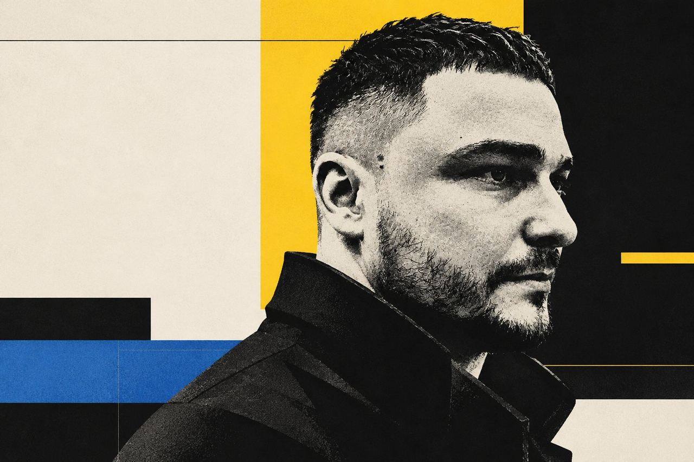
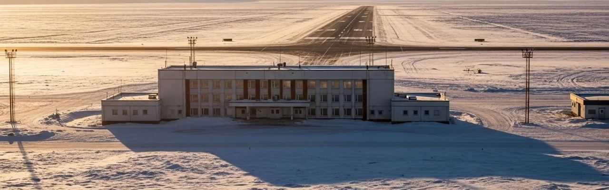

Активирую 99% работы, которую вы уже сделали
Оборот не деньги. Живая прибыль часто застряла в складе, неликвиде, дебиторке, связях и доступах, которые у вас уже есть. Резон — лаборатория поиска скрытых рычагов: экономическая разведка, научный расчёт и 15 лет реальных международных сделок без глянца.
В 2006 году иногда хватало одного разговора в правильном месте, чтобы забрать больше, чем другие за годы.
Сегодня правила жёстче. Одного знакомства мало. Возможность нужно вскрыть через внешнюю среду, проверить по цифрам, посчитать потолок потерь, пересобрать интересы сторон и довести до денег на счёте.
Для этого РЕЗОН соединяет 12 мыслительных моделей, технический системный анализ и быструю ИИ-разведку по открытым данным — чтобы видеть дисбалансы там, где другие действуют по привычке.
Вы покупаете 2 часа жёсткого разбора экономики вашей задачи за 40 000 ₽ (500 USDT вне России) — с расчётом потолка потерь и протоколом первого шага на понедельник, 9:00, без навязанного многомесячного консалтинга. Прибыль не обещаю: сначала считаю, сколько можно потерять. Цель не в том, чтобы вы научились ещё больше работать внутри бизнеса, а в том, чтобы он требовал от вас меньше постоянной борьбы за результат.
Если за первые 30 минут разбора я не найду, за что зацепиться, верну 100%. Без споров.


Михаил Алексеев
Вырос на Чукотке, окончил Ядерный университет МИФИ (кибернетика и информационная безопасность). 15 лет генеральный директор в ВЭД и промышленном экспорте (ООО «СтанкоПрессМаш»): 50+ сложных сделок с чеками $50k–$500k+ в Индии, Тайване, Японии, Турции, ЕС и Канаде.
В бэкграунде: пилотный экспорт титана в Индию с маржой 100%+, технический аудит линии цинкования в Муроме с профессором-материаловедом без замены 13-метровой ванны, возврат экспортного НДС в досудебных спорах с ФНС, плюс внедрение 1С, CRM и корпоративной ИТ-инфраструктуры.
Абстрактной теории и сытого консалтинга здесь не будет — только рабочий способ думать, проверять и забирать маржу.
Крах старой модели, спуск на асфальт и возврат без розовых очков
В 2023 году сдвиг рынка — рост цен на внутренние активы и логистику — убил экономику моей 15-летней экспортной модели. Я не стал изображать миллионера на кассовых разрывах, а прошёл полную остановку старого бизнеса и спуск на самый низ рынка: около 1000 откликов, ~50 собеседований, работа в такси, доставке и системное администрирование в государственном секторе.
Я вырос в Анадыре. Это город примерно на 14 тысяч человек, а бетонная полоса его аэропорта рассчитана на тяжёлую авиацию. По гражданской «юнит-экономике» такой бетон на вечной мерзлоте не окупился бы никогда.
Полосу залили в 1950-х как аэродром подскока для стратегических бомбардировщиков, а гражданские рейсы до сих пор держатся на субсидированных тарифах. Итог: спустя 70 лет готовый бетон принимает всё, вплоть до широкофюзеляжных Boeing 777. Они летают из Москвы в Анадырь каждую неделю. Так появилась возможность — причём очевидная. Методология Резона ищет и неочевидные.

От Рокфеллера до Цукерберга большие деньги работают одинаково: 99% тяжёлой работы уже сделано до вас или вами самими. Нужно увидеть, где пролит бетон, и включить последний процент.
Кейсы описывают конкретные операции автора. Резон не гарантирует аналогичного результата в другой ситуации.
Иногда всё проще, чем кажется
Бизнесу много лет скармливали медитации, энергию, харизму лидера, гороскопы и сказки про «семейную команду». Здесь только наука и грубый расчёт, как в 1940-х: массовую авиацию миру дала инженерия и математика, а не аффирмации. Не надо натягивать сложную юнит-экономику и масштабировать убытки там, где маржу воруют на закупках или товар годами гниёт на складе.
ИИ здесь — не волшебная палочка, а быстрая разведка по открытым данным (OSINT), проверка альтернатив и стресс-тест экономики в руках человека с технической базой МИФИ и 15 годами реальных сделок.

У вас сильная команда. Зачем вам ещё один взгляд?
Вокруг собственника с годами вырастает система: топ-менеджеры, советники, подрядчики, партнёры. У каждого свой бюджет, свои откатные или статусные интересы и тёплое место, которое жалко терять. Это не заговор — просто у них другие стимулы.
Я пришёл не за местом за столом. Я пришёл с предложением сделки
Вы покупаете 2 часа концентрированного разбора экономики вашей задачи с расчётом потерь и протоколом действий на понедельник, 9:00 — без многомесячного абонентского консалтинга. Мне не нужны ваша должность, доля, оклад или место рядом с вами. Некому подыгрывать, нечего защищать. Я не предлагаю ещё один проект, который потребует вашего постоянного участия.
Не нужно быть ниже собственника, чтобы приносить ему пользу. И не нужно быть выше, чтобы говорить на равных.
Это не юридическая гарантия, а устройство моих стимулов: я зарабатываю на найденной сделке или спасённом капитале. Помогаю найти решение, если оно реально существует.
Умножение на ноль даёт ноль
Представьте: Маск, Тиньков и Хормози разбирают вашу ситуацию и ищут, как помочь, но просто дать вам денег или инсайд не могут. Посовещаются и в итоге пойдут за водкой.

Оборот не критерий. Я смотрю на то, что вы можете мобилизовать
У компании с миллиардом может не быть ни одного живого рычага. У предпринимателя с оборотом в разы меньше бывают уникальный актив, доступ или связь, ради которых стоит работать. Размер ничего не гарантирует и ничего не исключает.
Нет предмета для работы: скажу в первые минуты и не буду тянуть.
Первый шаг — 40 000 ₽, риск беру на себя
Правило одно: оплата из остановленного кровотечения
Гонорар берётся с возвращённых средств, выкупленной с дисконтом доли, срезанных откатов или реализованного актива. 40 000 ₽ за первичный разбор полностью идут в зачёт. Проект не обязателен: найденное можно реализовать самому.
Жёсткие переговоры: разбираю переписки и записи с партнёрами, поставщиками, клиентами, регуляторами и силовиками* — и по вашему поручению могу сесть за стол первым номером — на вашей стороне или вместо вас, в рамках конкретной задачи. На меня у оппонента нет личных крючков, обид и вашей истории, давить нечем. Соединяю тактическую эмпатию ФБР (Крис Восс) и Кремлёвскую школу переговоров (управление нуждой, ролями и перехват инициативы под прессингом).
P.S. Начать ничего не стоит: два предложения в Telegram. Дальше — разбор по цифрам, без абонентки и без обещаний прибыли. Задача не в том, чтобы вы работали больше, а в том, чтобы бизнес требовал от вас меньше внимания.
Хотите понять механику до разговора? Читайте методологию

Внутри: экономическая разведка (OSINT), экономический реверс-инжиниринг, 10 направлений поиска асимметрий, коммерческий доступ, триаж команды без цензуры, 6 узлов партнёрства, связка ФБР + Кремлёвской школы со звёздочкой*, 9 когнитивных искажений, 12 мыслителей, история краха 2023 года и 4 антикризисных сценария. Главное — не добавить вам работы, а уменьшить ту, что вы несёте сейчас.
Открывается сразу, без форм и регистрации.